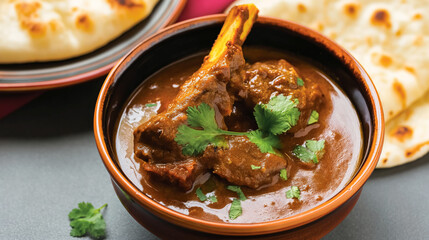
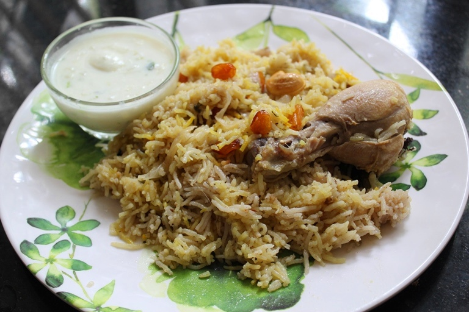

Biryani
Ingredients:
- 2 cups basmati rice
- 500 grams chicken, mutton, or vegetables
- 1 large onion, thinly sliced
- 2 tomatoes, chopped
- 1 cup yogurt
- 2 tablespoons ginger-garlic paste
- 1/4 cup cooking oil or ghee
- 1 teaspoon cumin seeds
- 2-3 bay leaves
- 4-5 cloves
- 2-3 cardamom pods
- 1 cinnamon stick
- 1 teaspoon turmeric powder
- 1 teaspoon red chili powder
- 1 teaspoon garam masala powder
- Fresh coriander and mint leaves, chopped
- 2 green chilies, slit
- Salt to taste
- Saffron strands soaked in 1/4 cup warm milk (optional)
- Fried onions for garnish
Recipe:
- Marinate the Meat/Vegetables: Mix the yogurt, ginger-garlic paste, red chili powder, turmeric powder, and salt with the meat/vegetables. Let it marinate for at least 1 hour.
- Cook the Rice: Boil the rice with bay leaves, cloves, cardamom pods, cinnamon stick, and salt until it's 70% cooked. Drain and set aside.
- Prepare the Gravy: Heat oil in a pan. Add cumin seeds and sliced onions. Cook until onions are golden brown. Add tomatoes, green chilies, and the marinated meat/vegetables. Cook until the meat/vegetables are done and the oil separates.
- Layering: In a large pot, layer half of the semi-cooked rice. Add the cooked gravy on top. Sprinkle fresh coriander, mint leaves, and fried onions. Add the remaining rice. Drizzle with saffron milk and ghee.
- Dum Cooking: Cover the pot with a tight-fitting lid. Cook on low heat for about 20-30 minutes. Let it rest for 10 minutes before serving.
- Serve: Garnish with fried onions and fresh herbs. Serve hot with raita.
Karahi
Ingredients:
- 500 grams chicken or mutton
- 3 tomatoes, chopped
- 2 large onions, finely sliced
- 2 tablespoons ginger-garlic paste
- 4-5 green chilies, slit
- 1 teaspoon cumin seeds
- 1 teaspoon coriander powder
- 1 teaspoon red chili powder
- 1 teaspoon turmeric powder
- 1 teaspoon garam masala powder
- Fresh coriander leaves, chopped
- Salt to taste
- 1/4 cup cooking oil
- Lemon wedges for garnish
Recipe:
- Heat Oil: Heat oil in a karahi (wok). Add cumin seeds and let them splutter.
- Sauté Onions: Add sliced onions and cook until golden brown.
- Add Ginger-Garlic Paste: Add ginger-garlic paste and sauté for a few minutes.
- Cook Tomatoes: Add chopped tomatoes, green chilies, coriander powder, red chili powder, turmeric powder, and salt. Cook until the tomatoes are mushy and the oil separates.
- Add Meat: Add the chicken or mutton pieces. Cook on medium heat until the meat is tender and fully cooked.
- Garnish: Sprinkle garam masala powder and fresh coriander leaves. Serve hot with naan or roti.

Nihari
Ingredients:
- 500 grams beef or lamb shank
- 2 large onions, sliced
- 2 tablespoons ginger-garlic paste
- 1 cup yogurt
- 1/4 cup cooking oil
- 1 teaspoon turmeric powder
- 1 teaspoon red chili powder
- 1 tablespoon Nihari masala
- Fresh coriander leaves, chopped
- 1 lemon, cut into wedges
- Salt to taste
Recipe:
- Heat Oil: Heat oil in a pot. Add sliced onions and cook until golden brown.
- Add Ginger-Garlic Paste: Add ginger-garlic paste and sauté for a few minutes.
- Add Meat: Add beef or lamb shank and cook until browned.
- Add Spices: Add turmeric powder, red chili powder, Nihari masala, and salt. Mix well.
- Add Yogurt: Add yogurt and cook until the oil separates.
- Simmer: Add enough water to cover the meat. Cover and cook on low heat until the meat is tender.
- Garnish: Garnish with fresh coriander leaves and lemon wedges. Serve hot with naan.

Pulao
Ingredients:
- 2 cups basmati rice
- 500 grams chicken or vegetables
- 1 large onion, sliced
- 2 tomatoes, chopped
- 2 tablespoons ginger-garlic paste
- 1/4 cup cooking oil
- 1 teaspoon cumin seeds
- 2-3 bay leaves
- 4-5 cloves
- 2-3 cardamom pods
- 1 cinnamon stick
- 1 teaspoon turmeric powder
- 1 teaspoon red chili powder
- Fresh coriander and mint leaves, chopped
- Salt to taste
- Water or chicken broth (as needed)
Recipe:
- Heat Oil: Heat oil in a pot. Add cumin seeds, bay leaves, cloves, cardamom pods, and cinnamon stick. Sauté for a few seconds.
- Sauté Onions: Add sliced onions and cook until golden brown.
- Add Ginger-Garlic Paste: Add ginger-garlic paste and sauté for a few minutes.
- Cook Tomatoes: Add chopped tomatoes, turmeric powder, red chili powder, and salt. Cook until the tomatoes are mushy and the oil separates.
- Add Meat/Vegetables: Add chicken or vegetables and cook until they are tender.
- Add Rice: Add the rice and sauté for a few minutes.
- Add Water/Broth: Add water or chicken broth (double the quantity of rice). Bring it to a boil.
- Cook: Reduce the heat to low, cover the pot, and cook until the rice is done and the liquid is absorbed.
- Garnish: Garnish with fresh coriander and mint leaves. Serve hot with raita or salad.

Haleem
Ingredients:
- 500 grams boneless chicken or mutton
- 1 cup wheat grains, soaked overnight
- 1/2 cup split chickpeas (chana dal), soaked
- 1/2 cup lentils (masoor dal), soaked
- 1/2 cup split pigeon peas (toor dal), soaked
- 2 large onions, sliced
- 2 tablespoons ginger-garlic paste
- 1 cup yogurt
- 1/4 cup cooking oil
- 1 teaspoon turmeric powder
- 1 teaspoon red chili powder
- 1 tablespoon garam masala powder
- Fresh coriander and mint leaves, chopped
- 1 lemon, cut into wedges
Recipe:
- Cook Grains: Cook soaked wheat grains, chickpeas, lentils, and pigeon peas in water until they are soft and mushy. Mash them well.
- Heat Oil: Heat oil in a pot. Add sliced onions and cook until golden brown.
- Add Ginger-Garlic Paste: Add ginger-garlic paste and sauté for a few minutes.
- Add Meat: Add boneless chicken or mutton and cook until browned.
- Add Spices: Add turmeric powder, red chili powder, garam masala powder, and salt. Mix well.
- Add Yogurt: Add yogurt and cook until the oil separates.
- Combine: Add the cooked grains to the meat mixture. Cook on low heat, stirring frequently, until well combined and thickened.
- Garnish: Garnish with fresh coriander, mint leaves, and lemon wedges. Serve hot with naan.